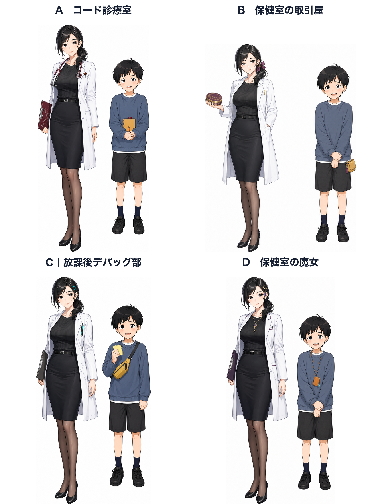
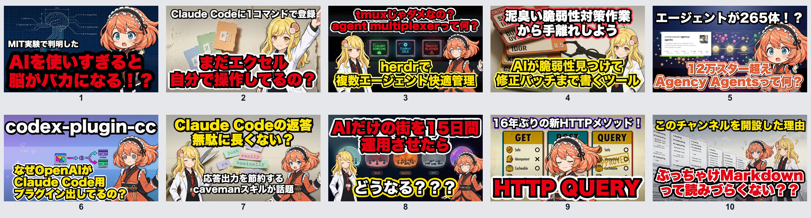
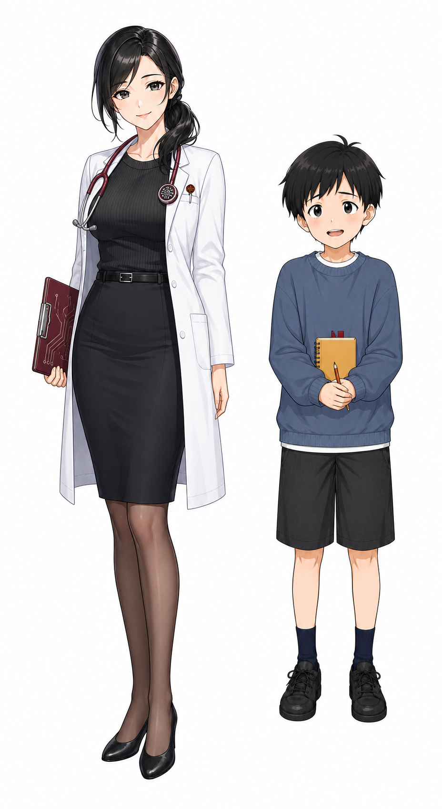
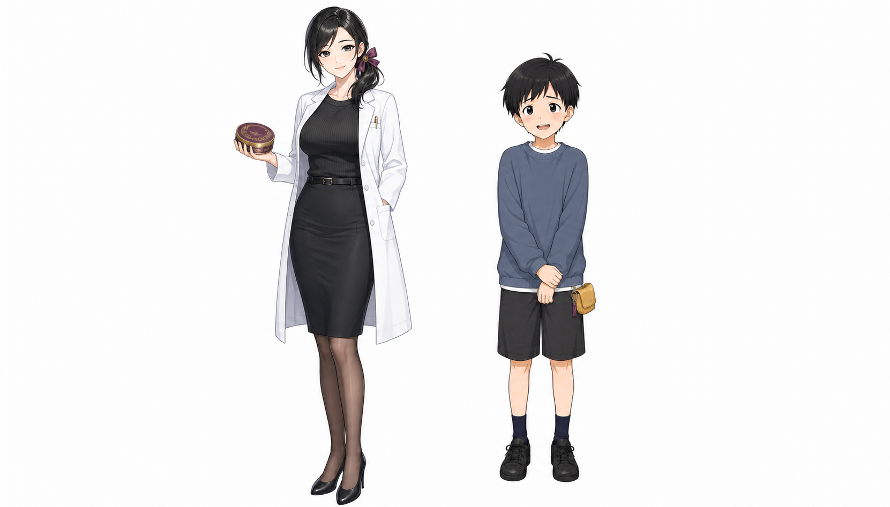
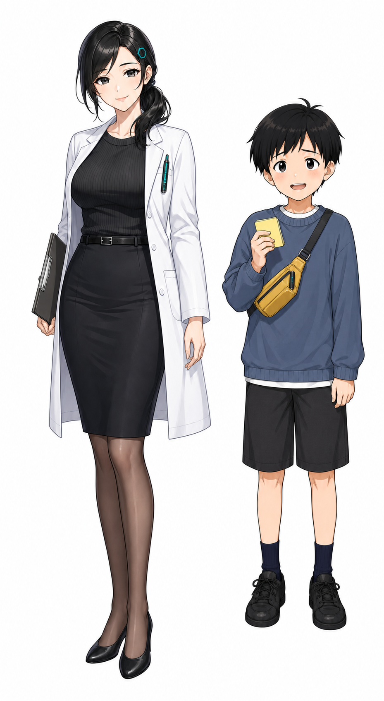
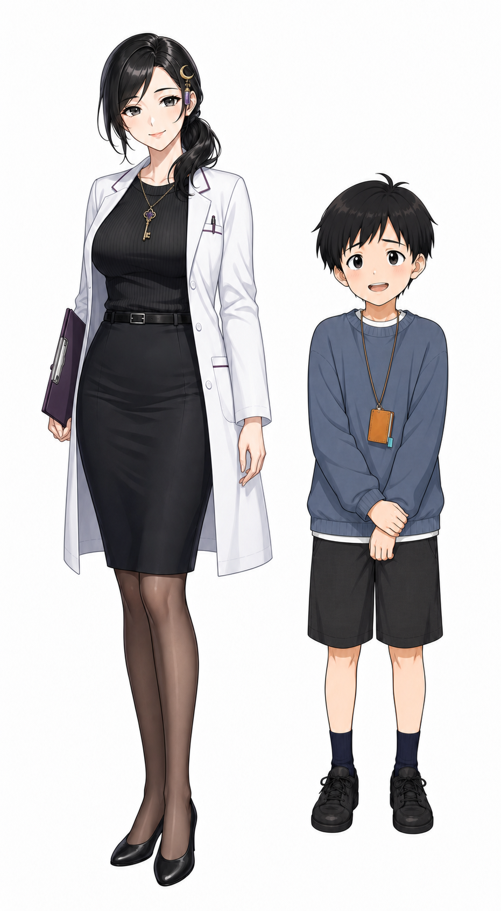

先生｜技術の「診断医」
外から見える性格: 穏やか、余裕がある、少し意地悪、結論を急がず相手に気づかせる。
内側の弱点: 説明のつかない挙動や雑な一般化を放置できず、興が乗ると検証を増やしすぎる。
能力: 情報を症状として整理し、原因候補を減らし、最小実験に落とす。
画面上の記号: 回路聴診器、バーガンディ、低いサイドポニー、片眉と小さな笑み。
確定済みの二人の見た目を壊さず、クロノITの実例とキャラクター認知・教育エージェント・対人関係の研究をつなぎ、4方向のキャラクターデザインと運用設定を作成した。

外から見える性格: 穏やか、余裕がある、少し意地悪、結論を急がず相手に気づかせる。
内側の弱点: 説明のつかない挙動や雑な一般化を放置できず、興が乗ると検証を増やしすぎる。
能力: 情報を症状として整理し、原因候補を減らし、最小実験に落とす。
画面上の記号: 回路聴診器、バーガンディ、低いサイドポニー、片眉と小さな笑み。
外から見える性格: 純朴、気弱、褒められたい、頼まれると断りきれない。
内側の強み: 専門用語を素通りせず、実際の利用者が困る一点を素直に拾う。
能力: 具体例を出す、手を動かす、期待結果と実結果のズレに気づく。
画面上の記号: 少し上向きの目線、青灰色の大きめスウェット、黄色いメモ、握った手。
対人印象は大きく温かさと能力で整理できるという研究があり、関係性では温かさは同調しやすく、支配性は服従性を呼びやすい。したがって「先生は温かく主導的、少年は温かく控えめ」は狙いに合う。反面、少年が毎回無能だと親しみより哀れさが勝つ。知識量は先生 70 : 少年 30でも、発見への寄与は 55 : 45程度にする。[8][9]
問いは「確定したベース外見を保ちながら、動画の小さな表示でも識別でき、台本とアニメーションの双方で継続運用できる二人組にするには何を足すべきか」である。
シルエット、色、髪飾り、小道具、表情差。サムネイルや画面端でも残ること。
先生が説明するだけでなく、少年の疑問が説明を前進させること。
余裕と翻弄の魅力を保ちつつ、温かさと安全性を失わないこと。
ツール状況: ローカル知識ベースに該当資料なし。Zotero接続は停止中。Claude CLIは未ログインのため外部AIクロスチェックは実行できず、公式資料・査読論文・公式チャンネル実例の突合で補った。
記憶されるキャラクターは、細かな来歴より先に、短時間で処理できる視覚と行動の反復を持つ。処理しやすい刺激ほど好意的に評価されやすいという知覚流暢性の知見とも整合する。[7]
flowchart LR A["1. サムネ識別
輪郭・差し色・髪飾り"] --> B["2. 役割推論
聴診器・メモ・姿勢"] B --> C["3. 関係のリズム
余裕 × 上目遣い
主導 × 素朴な抵抗"] C --> D["4. 毎回の儀式
問診 → 実験 → 反例 → 診断"] D -.反復で強化.-> A
クロノITのサムネイルでは、同じ二人が題材をまたいで繰り返され、髪色・髪飾り・衣装の差し色・反応表情が小サイズでも残る。説明文が大きくてもキャラの位置と反応差が安定し、片方が落ち着き、片方が驚くという対比が一瞬で読める。これは特定の衣装を模倣するというより、少数の恒常記号＋大きな反応差を再利用する設計と捉えるべきである。

Valveのキャラクターアートガイドは、固有シルエット、明暗パターン、色・彩度、細部と休ませる面の配分を重視する。Riotも、遠距離・小表示では細部が崩れるため、輪郭と色の一貫性が識別を支えるとしている。[1][2][4]
アニメーションでは、Microsoftの原則にある anticipation、staging、secondary action が有効だが、補助動作は主動作を奪ってはいけない。先生なら「先にクリップボードを見る → 顔を上げて一言」、少年なら「肩が少し上がる → 一拍置いて頷く」のように、意味のある予備動作へ限定する。[5]

設定: 放課後の保健室に、端末やコードの「症状」が持ち込まれる。先生は問診と最小実験で原因を切り分け、少年は利用者として再現手順を試す。
先生: 回路聴診器＋バーガンディの診断板。余裕は「もう原因候補を絞っている」ことから生まれる。
少年: 黄色い症状メモ。専門用語は弱いが、何をしたら何が起きたかを正直に記録できる。
反復ギャグ: 先生が聴診器をPCやコードに当てようとし、少年が毎回「そこから音はしません」と止める。
リスク: 何でも医療比喩にすると説明が遠回りになる。比喩は導入と結論だけにする。

設定: 先生は質問にただ答えず、小さな検証や手伝いと引き換えにヒントを出す。少年は条件が少し不公平だと分かっていても、承認・飴・好奇心で受けてしまう。
先生: プラムのリボン＋アンティーク調の飴缶。色気ではなく、相手の反応を読んでいる余裕を強調。
少年: ご褒美トークンの小型ポーチ。増減でシリーズ内の小ネタを作れる。
反復ギャグ: 条件交渉を始めるたび、先生が先回りして追加条項を出す。最終的に少年の素朴な一言が一番大事な条件になる。
リスク: 成人女性が子どもを誘惑する印象に近づけない。取引物は菓子、スタンプ、読書時間、検証権など非恋愛的なものに固定する。

設定: 保健室の一角が非公式のデバッグ部になっている。先生が仮説を立て、少年が壊れ方を再現し、二人で修正する。
先生: ティールの六角ヘアピン＋ペン型テスター。観察と検証の人。
少年: 黄色い付箋と小型ツールポーチ。毎回ひとつは自分で試し、時々先生の見落としを拾う。
反復ギャグ: 先生が「安全な失敗」と言うたび、少年がバックアップの有無を確認する。
リスク: ツールバッグを大きくすると活発で垢抜けた少年に寄り、D3の気弱さが薄れる。実運用では手帳程度まで縮小する。

設定: 先生は難しいコマンドを「おまじない」と呼び、少年は半信半疑で唱える。実際の説明は必ず再現可能な技術手順に戻す。
先生: 三日月の髪飾り＋鍵のペンダント。白衣を崩さず、象徴だけで謎めきを加える。
少年: コマンドタグ型の小さなノート。半分信じてしまう純真さが上目遣いと合う。
反復ギャグ: 少年がコマンドの意味を尋ねると、先生が神秘的に濁し、直後に非常に実務的な説明を始める。
リスク: 魔法エフェクトや衣装を足すと技術チャンネルの信頼性が落ちる。現在のアクセサリー2点より増やさない。
5点満点。ここでの点数は客観的真理ではなく、現状の動画企画に対する設計判断。
| 案 | 小表示の識別 | 二人の化学反応 | 教育役割 | 長期運用 | 安全な演出 | 合計 |
|---|---|---|---|---|---|---|
| A コード診療室 | 5 | 4 | 5 | 5 | 5 | 24 |
| B 取引屋 | 4 | 5 | 3 | 4 | 3 | 19 |
| C デバッグ部 | 4 | 4 | 5 | 5 | 5 | 23 |
| D 保健室の魔女 | 5 | 5 | 3 | 4 | 4 | 21 |
教育エージェント研究では、Expert、Motivator、Mentorのような役割を、外見・声・動き・台本まで一貫させることに意味がある。一方で、キャラクターを置くだけで学習が良くなるわけではなく、余計な動きや属性は外的認知負荷を増やしうる。[10][11][12][13]
本案では先生を Expert 70%＋Mentor 30%、少年を Viewer proxy 60%＋Motivator 40%とする。先生の「正解」は短く、少年の「それって普通の言葉でいうと？」を挟むことで、装飾ではなく理解に寄与させる。
| 要素 | 先生 | 少年 |
|---|---|---|
| 基本テンポ | 0.95倍程度。要点直前に短い間。 | 1.0倍。理解時に少し明るくなる。 |
| 口パク | 小さめ。文節単位で閉口を挟む。 | 先生より少し大きいが、連続開閉を速くしすぎない。 |
| 主動作 | クリップボードを見る、ペンで一点を示す、片眉。 | 上目遣い、肩が少し縮む、メモを取る、遅れて頷く。 |
| 補助動作 | ポニーが一度だけ追従。常時揺らさない。 | 袖やメモが一度だけ追従。全身を上下させない。 |
| 禁止 | 常時の胸揺れ、少年へ身を寄せる、過剰なウインク。 | 毎回泣く、震え続ける、常に無知、過剰な赤面。 |
| 決め台詞 | 「では、症状を切り分けましょうか」 | 「つまり、ぼくでも試せる形にすると？」 |
面白さは「規範違反だが無害」と同時に感じられると成立しやすいという benign violation の考え方が使える。先生の軽い意地悪は、少年が断れること、損害がないこと、最後に学びや小さな報酬があることを画面上で明示する。[14]
全案で確定済みの先生とD3少年を参照し、顔・髪色・目の色・体格・基本衣装を固定した。白背景、全身、横並び、文字なし、強い追加記号は各人2個まで、成人女性と子どもの恋愛・性的相互作用なしを共通条件にした。各案の差分は プロンプト仕様書に保存している。